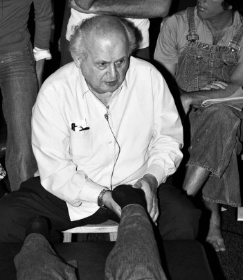
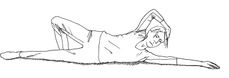

Feldenkrais for Actors
Injury
It is important to remember that Feldenkrais is not a medical practice. Its arena is educational. When it comes to injury and other conditions, a form of re-education can often play a crucial role. So it is that actors, just like everyone else, frequently first discover the Feldenkrais Method because they have an injury that has already had medical attention but needs something more, or they have a pain that has become chronic and that nothing seems to shift. Injury and pain for actors can be disastrous. I know this only too well as it happened to me: it’s not a bad example to look at to see what Feldenkrais can do.
I had drifted away from Feldenkrais as I was touring or in rep out of London and couldn’t get to any class regularly. It was true that studying with Monika Pagneux and then taking classes at The Open Centre in Old Street for a while had had a transformative effect on my sense of self, as well as my movement, and that the things I had learnt had stuck, but I know now that I had hardly begun. It stood me in pretty good stead even so. In my early thirties I had an accident and tore the cartilage in my right knee. It went misdiagnosed and pretty much dismissed by my doctor and by the first physiotherapist I saw. Then, despite finding another physiotherapist who did some very good work, it still didn’t feel safe or stable. It wasn’t until six months later when I tore it further just reaching for something while sitting on the ground at a picnic, that the doctor agreed it was more than a strain and suggested I needed an operation. During this time I had been going for auditions leaning on a stick, knowing it was unlikely I could accept the job anyway. Not a great way to go for a meeting with Mike Leigh, for example, as I did. It was pretty distressing and did my career no good at all, so I agreed to the operation. Afterwards I headed back into Feldenkrais. While not being able to walk had rekindled my interest in it, I was actually thinking more about doing the training than hopeful of help with my knee – my understanding of Feldenkrais was from the perspective of developing skill, so I didn’t realise that it was exactly what I needed now.
The operation was done very well by a very good surgeon who specialises in knees. I needed it because there was a piece of meniscus (cartilage) torn loose and flapping about in there. The physiotherapy was also very good in keeping the musculature active so that it didn’t waste when I couldn’t really use it. And yet all was not right. I still didn’t use my right leg fully, and it didn’t feel as strong or reliable. It was hard to keep the muscles from wasting without constant exercise, and sometimes I would still get pain. It was only after I got stuck into Feldenkrais again that it dawned on me that this had been an accident waiting to happen, because of the way my back habitually twisted and bent, and how that related to my leg and made it vulnerable. Quite suddenly after a hands-on lesson (see Functional Integration below) – no doubt also prepared for by many Awareness Through Movement classes – I stood up on my injured right leg properly and realised I had not felt that for years. If ever, perhaps. The way I could feel my pelvis over my leg with the weight really on the leg felt totally new, but I could not have told you that it had been missing before. My leg suddenly felt so strong and clear and supportive – nothing like the slightly dodgy, weakened one I had thought I was saddled with for life. No amount of strengthening exercises had enabled me to feel that kind of support from my leg, and now I had simply got up from a table and there it was. I was shocked. As Feldenkrais trainer (and athlete and aikidoist) Jeff Haller, says:
Our muscle tone is turned on by our relationship to the environment. That means the very specific ways we find support from the surfaces we are on. Moshe spoke clearly about how it is that we continually find support as the basis for action. The more specific, more refined, more clear you are in the way you find where you are supporting yourself from, the more clear any action you make will be.88
That’s what had happened for me, and it meant that my musculature now stabilised almost immediately. Rapidly now, bits of movement that I had lost around the edges without noticing came back. With no pain. I could leap up from sitting without using my hands, run properly without hesitation and cartwheel again. I remember coming home from training and rushing about with my baby daughter for the sheer pleasure of moving like that again. I really hadn’t noticed I had stopped doing those kind of things until it all started flooding back – or perhaps I had just accepted its disappearance as getting older and had begun to define myself as a person ‘with a bad knee’.
It did take some time working with the Method to feel with confidence that I was no longer a person with a bad knee. In finding new layers of sensitivity and awareness, I began to notice the movement patterns that triggered the pain. I found different ways of using my whole self, of finding support from the skeleton and the ground that enabled me to feel the support of the leg better. I started to recognise when I was beginning to fall back into old pain-associated ways of moving. I used Feldenkrais lessons to make a clear shift in my whole self-use and head off trouble earlier and earlier. It wasn’t just about learning how to walk or do an exercise ‘correctly’; it was about the ways my pelvis moved over the top of the thigh bone, and what my back, ribs, shoulders and head had to do with that (for example). It was also about finding the range of possibility through many kinds of movements so I wasn’t stuck with the few versions that were associated with pain and weakness. That’s the sort of thing lessons explore (pelvic clock for a start!). One of the tricky aspects of pain is that, in seeking to avoid it, we tend to shut down our options more and more – and in the process often limit ourselves to the very pathways that involve it.
These days I run up to a half marathon barefoot, and am currently training for my black belt in Goju Ryu Karate. The training for both those activities has helped strengthen my knees, it’s true, but if I hadn’t been able to improve or got support from the ground to do any of it, all that strengthening might have served simply to entrench me in painful patterns. And it goes without saying that both those activities are so demanding that I couldn’t have even got to the starting line without Feldenkrais. Sometimes in the early days I would experience a difficulty or pain as I upped my mileage or speed, or worked on a new movement in karate. I would get anxious and think about stopping completely. Instead of giving up, though, I would see it as an indication that I needed to improve something. So I would come back to Feldenkrais and delve into lessons that might help and/or go to a senior practitioner for some Functional Integration, until I had improved how I was operating sufficiently for the difficulty to disappear. With the ‘how’ improved, I could train again, albeit with my attention on training in the better organisation until it was secure. It took considerable dedication but it worked. Very occasionally now when I train hard I strain something – because under pressure I have reverted to an earlier, less useful pattern, or because I just need to find an even better pattern than the ones I have available to cope with this new level of demand – but I have the same attitude: sense what I am doing that is not working so well; use my skill with awareness through movement or seek help from another practitioner to do what I am doing, better. Once I have improved the ‘how’ I can go back to developing speed, range, amount, power or whatever I want, effectively and safely. Keep going back and forth. Improve. Train. Improve. Train. That way I gain skill instead of simply entrenching unresolved injuries that are likely to deepen and worsen as a result. Win, win. So far, so good.
Interestingly, I didn’t go back into acting for long. My life had got to a point where Feldenkrais just seemed a much more interesting and viable option. But had I chosen to, I could have gone back not just ‘repaired’ but with significantly better awareness and use of myself than before, which is the thing I think is wonderful about Feldenkrais. It is about learning and improving, not just fixing. Sometimes it can help take you beyond an injury into even better functioning than before because of all the attention and learning. And even if it is an injury that is always going to be there in some sense, my observation is that people are not so defined by their injury, are more able to work with and around it, to anticipate a flare-up, and to look after themselves better so the situation doesn’t limit them more than necessary (or get even worse). An actor with chronic pain can become unemployable. There is too much money at stake on a shoot or on a tour. Feldenkrais is one of the best tools you can have for staying injury-free, or working with chronic injury if it has got that far.
Awareness Through Movement (ATM)
You can experience ATM work in classes, which are the kind of thing I have put into this book. There are thousands of lessons created by Moshe Feldenkrais, and most experienced teachers also create their own. I have a number of students who come to my classes to find a way out of many kinds of pain or the aftereffects of injuries. In these cases, the Method is often very successful, sometimes quickly but sometimes the patterns involved are more deep-seated. Whatever happens, the Method involves learning and improving skill, so it is never wasted time.
Feldenkrais trainer Garet Newell told me about her own experience of injury:
The one thing the Feldenkrais Method offered that nothing else I had done up till that point seemed to offer was a way to do something for yourself. I felt this could liberate me from that dependence on someone else… by finding a way to direct myself. This is what Awareness Through Movement does. When you are in pain, the person you go to to relieve the pain becomes almost like an addiction in your life. I didn’t want that kind of relationship, that kind of dependence.
Classes may not all be suitable for all people with serious difficulty, or who really need another person’s touch to address a very specific problem, or to help them stop hurting themselves initially. If your condition prevents you from getting up and down from the floor, then you can still do a considerable number of the lessons in sitting, but many lessons will need to be designed or altered for you: it is important to talk to the teacher first as some are more experienced at doing that than others. Or there is another way you can work…

Functional Integration: Moshe Feldenkrais
© International Feldenkrais Federation Archive
Functional Integration is the one-to-one hands-on version of the Method. The aim of FI is still the same as ATM: it is not a different approach, just a different way of experiencing the Method. It is still a way of teaching and enabling rather than ‘fixing’, but it uses touch and involves a directly relational experience that can be very helpful. FI is also not just for injury: if there is something you wish to improve – be it a skill for art, sport or life – or if you just want a more private, one-to-one experience, then you might be interested to try it out, much as if you wanted to address a specific condition or have too much pain or difficulty to do a class. It is useful for actors working on demands for a particular role too. Some people prefer to do either FI or ATM, and some people do both.
We use a low, wide table and what is sometimes described as a ‘listening’ touch. It is not massage or cracking or exercising. The practitioner listens to the person with their hands and eyes as well as ears. We feel how the person responds to a small suggestion of movement from our hands or how a small amount of force, like a tiny push through a foot, a shoulder, a rib, a sit bone (for example), can travel through the skeleton. We are trained to ‘see’ the skeleton and to notice how the different parts of the person join in with the suggested movement and where they don’t, where the movement asks for articulation in the skeleton that is not available, where it asks for a connection or relative movement that is not familiar, and also where there are further possibilities. Then with our hands we can bring attention to clarify what is happening in the places that can do the movement well – and even enable you to improve them so your system has a clearer sense of what it is that it is looking for. From there we can go on to invite other places to join in that haven’t caught on as easily or have dropped out of the picture. We use some apparently topsyturvy ways of working, like not stretching muscles that are short from working too hard, but gently bringing the places that the muscles attach a little closer together, so passively shortening them a little more. By this action we take over the work of those muscles and encourage them to give up their work and rediscover their length. We might use rollers and towels and balls to disturb or challenge the status quo in a person’s muscle tonus or balance so that their system has to find something different. Just as in ATM, we think about enabling the person to feel the surface beneath them differently, to find support from it through the skeleton and hopefully to have a new experience of themselves in some way.
Functional Integration is a very subtle and enormously skilful art, learnt initially over a four-year training period, but only matured through thousands of hours of experience over many years. We don’t dictate with our hands but look for what is already available, going from what the person can do, to gradually introducing a greater variety of possibility. For the practitioner it means having a good understanding of what can be available in a movement and recognising what is and isn’t there at any point. It means having a touch that enables the person to recognise something about themselves or go somewhere new without them automatically putting the brakes on before giving it a chance. We have to feel when someone’s system feels safe enough and when it is on the edge of feeling pushed too far. We seek to trust the intelligence of the person’s system to learn – in the way it has done since the person was a baby – from a variety of experiences, and that a new and better way of operating will emerge as a result, but we have to know how to create the kind of learning experience that will enable that to happen. Sometimes learning can take time and change comes slowly, gradually – two steps forward, one step back, perhaps, and periods of plateauing – but patience is almost always rewarded in the end. Sometimes the change is dramatic and quick. It depends on the person, the skill of the practitioner, the quality of the interaction between them and the particulars of the situation. It is hard to describe the experience. You simply have to try it. All fully qualified Feldenkrais practitioners can offer Functional Integration.
Neuromuscular re-education, functional training and working with an understanding of brain plasticity are now all the rage, but they are the basis for both ATM and FI. I have listed some popular books in the Appendix for further reading. Feldenkrais counted neuroscientist Paul Bach-y-Rita one of the ‘grandfathers’ of brain plasticity (working on synaesthesia) amongst his friends and colleagues (his wife, Eileen Bach-y-Rita, trained as a Feldenkrais practitioner), and you can listen to his conversation with another well-known neuroscientists of the time, Karl Pribram, on CD. Feldenkrais was already working with how the brain can learn and relearn back in the fifties, and his Method is still one of the most sophisticated available, in my experience. As I write, New York Times best-selling science writer Norman Doidge’s new book, The Brain That Heals Itself, is hitting the shelves with sixty-four pages devoted to Feldenkrais. The recognition is well overdue.
The Pattern of Anxiety
Anxiety can also be a big issue for actors. It can result from the usual stress of producing something special on ‘Action!’, or in auditions, rehearsals, improvisations, and on first nights, or it can amount to full-on stage fright or camera freeze. Anxiety is also an issue in a wider context, in terms of needing to get work, earn money and deal with the business of trying to build a career. It is also present in every classroom in every drama school where trying to learn from new experiences and diving into the unknown can be a stressful process. The anxiety of getting it right and being good enough or wanted enough can seriously get in the way at every stage in an actor’s life. All these things can get in the way of other people’s work and lives too, but an actor has to have pretty much all of themselves visibly available and exquisitely able at all times, so anxiety is particularly disruptive.
Having read Part 4a on the physiology of emotion, you will appreciate that much of what I could say about anxiety has been touched on there. The ‘fight-or-flight response’ or ‘stress’ are the particular areas of emotional response that everyone knows have a barrage of physiological aspects. These can include targeted blood flow, release of adrenalin and other hormones and transmitters, increased heart and breathing rate, narrowing of vision, suppression of the digestion and immune system, possible release of bowels and bladder, and contraction or inhibition of certain muscle groups, depending on the level of anxiety and fear involved. All these physiological aspects are there to enable us to deal with situations where we need to fight, run or play dead, none of which is very applicable in an acting situation. We do also fluctuate all the time in smaller ways between a higher-alert setting (known as ‘sympathetic’) of the part of the nervous system, that governs these less (or un)consciously controlled processes (‘the autonomic system’); and a more relaxed setting (‘parasympathetic’), to enable us to meet the demands of the day or to take advantage of easier moments. An actor can benefit from a certain degree of alertness during performance. But too much and it can easily tip into a fairly full-blown sympathetic state, which can seriously get in the way of moving freely, breathing, speaking, singing, thinking and being easily present and available. Mostly actors wish to find ways to reduce this kind of anxiety and achieve a more helpful balance of the sympathetic and parasympathetic states.
In his book The Polyvagal Theory, Stephen Porges presents a more sophisticated version of the sympathetic/parasympathetic axis, centring on the vagal nerve, which is much too complex to go into fully here. Simplified, and as I mentioned in Part 4a, he links our ability to communicate via facial expressions and cues with a calmer state, asserting that a state of high alert ‘switches off’ our ‘social engagement system’: very significant for an actor.
In the section on anxiety in his book The Elusive Obvious, Feldenkrais points out that the ‘flexor’ pattern often involved in anxiety or fear (a shortening the muscles of the front and lengthening in the back that produces a curling up) is a protective one. It works not only to shield the vital organs and head from a fall or attack, or can give more force to a subsequent opposite ‘extension’ pattern (lengthening through the front and upright in the back) which we would need to run away or fight with. The flexor pattern also gives comfort and a feeling of safety that helps to reinstate a sense of well-being, that can in turn calm the anxiety attack.89 I think many of us know this from the times we are feeling low, when curling up can take us back to some primal place of protectedness that feels safer and so better. This in turn gives us a clue to some of the things that can help in that kind of primal way to calm the sensory aspects of anxiety, and help switch to a more parasympathetic state – to return to a sense of balance, well-being and calm. It is a sense of safety we are looking for at a very fundamental level.
Talking about anxiety, we have to acknowledge that sometimes there is deep underlying trauma, either in the shape of an event or series of events (witnessed or experienced) or in the longer-term (sometimes less dramatic) form of developmental trauma due to the circumstances of a person’s childhood. This is an enormous topic and, while we have touched on it in earlier sections – because it is integral to how people shape themselves, how they behave and move – a full discussion of a therapeutic approach for trauma goes beyond the scope of this book.
Support
One of the things that can offer us a feeling of more safety, equilibrium and protection at moments of stress is support: externally that could mean support from anyone on hand who can help in the moment, from family, friends or loved ones, from professionals or from some kind of structure, organisation or from developing a practical solution. Internally the thing that can give us a direct physical sensation of balance and support, and enable some of the holding patterns to let go, is to regain a sense of the skeleton and the ground, since those are the things that literally hold us up. One of the pieces of the anxiety response according to Feldenkrais is inhibition of the anti-gravity muscles. In simpler language, that means the muscles in the legs and around the spine, whose job it is to hold us up against gravity, give up. We have the phrase ‘weak at the knees’ and the idea that someone can ‘crumble’ or ‘collapse’ in the face of too much adversity. This means that everything in Part 2b about sensing the support from the ground, and from the skeleton, and the ability to adjust one’s balance and equilibrium, applies here too. A sense of power and potential for power can also give a sense of support and so much in Part 3b can apply too.
There is also something significant in the relational and connective nature of Functional Integration lessons described earlier (a kind of complicité, see Part 2a), where the practitioner attends profoundly to the person on the table and gives a sensitive response through touch. Simply being present with them can enable a person to find more of what they need to feel safer and better supported.
Tone
The result of any Feldenkrais lesson, be it Functional Integration or Awareness Through Movement, is usually to reduce unnecessary tension and enable the person to find a more evenly distributed muscular tone throughout, which, being part of a calm state in the autonomic system, can elicit more of the whole state.
Breath
Regulating breath is a widely used technique for working with anxiety, because slowing down the breath and heart rate affects the sympathetic/parasympathetic axis too. The problem is that it can’t always be done by willpower in the moment. If you play with the length of the breath or the places that you are breathing into – or if you work with your patterns of breath-holding at times that are not so stressful – you may find that you can make some different patterns more readily available at those stressful times. One aspect to remember is that the in-breath is more activating and the out-breath is more calming, so if you simply increase the length of the out-breath relative to the in-breath you already tilt the axis towards a calmer state. The Feldenkrais Method contains a variety of lessons differentiating the parts you use or could use in breathing, for developing the use of the diaphragm, ribcage and abdomen, clarifying the pathways for breath through the nose or mouth, and working with patterns of inhaling, exhaling, pausing or breath-holding. We have seen an example in Part 5 on breath and voice (See-Saw Breathing), but there are many more. Breathing and heart rate are connected through the nervous system, but when you look at the anatomy and notice how the heart sits on top of the diaphragm, it can be no surprise they are linked!
Playfulness
This may be surprising because it’s very hard to play when you are anxious, but the opposite is also true: it’s very hard to be anxious when you are truly playing. I mentioned the anxiety and stress of learning and how it gets in the way of the student actor – but it could be true in rehearsal and any kind of developmental work. A playful approach to learning is built into the Feldenkrais Method which, if really taken to heart, can take the stress out of many situations an actor finds themselves in.
I have noticed how much learning is impeded through the anxiety of learning (or is it of being taught?). The anxiety of learning is the fear of appearing stupid or not being able to translate this new information into something that makes sense for you. This is particularly noticeable in the early stages of learning when there is no emergent pattern, or sense of where the movement is going, how it is shaped… which means that you lose your balance; your muscular tonus suddenly becomes unproductively tense and you put yourself in a situation where the movement output is appalling so you are not getting any useful feedback from what you are doing… Feldenkrais gives us an example of how to take a great deal of the anxiety out of learning and put a great deal of the fun and curiosity and self-agency into learning.
Dick McCaw,
Senior Lecturer at Royal Holloway, University of London
What Dick says here is important. There is a duality of opposites that we can get stuck in – right/wrong, yes/no, accepted/not accepted, good/bad – and that can leave us feeling anxious about which side of the duality we will end up on, and feeling shamed if we feel we have ended up in the wrong/no/bad camp. Your teacher, director or colleague can’t just tell you that you are right/good all the time, as you wouldn’t learn or progress, but what Feldenkrais does effectively is to help you step outside the duality. Feldenkrais isn’t about right or wrong, good or bad, yes or no – it’s about trying something out and seeing how it goes. Everything is useful as it all contributes to exploring and discovering. If something doesn’t work so well for what you want, it’s still a step forward because it tells you something. It’s closer to play in that sense, because playing can never really be right or wrong (I am talking about creative playing rather than competitive games). Something might be within the rules for the game or not, or be more or less fun, but it isn’t wrong in any significant way. If you end up bored or down a blind alley, you just shift the game till it’s fun again.
Playfulness also goes with that sense of connectedness to others that can enable a person to feel safer than being stuck on their own with their difficulty. A really palpable example is the way an actor’s nerves usually disappear as soon as they feel a connection with the other actors on stage or with the audience. I always remember that first ripple of response or that sense of stillness in the audience that signalled they were with me and that I was not out there on my own gesticulating meaninglessly, or the moment I felt something vital being generated between myself and another actor. I know that some of the pre-show anxiety is about the possibility of this not happening and that you will be left out there on your own to ‘die’, but as we saw earlier (Part 2a) it is far more likely to happen if you stiffen and become in some way absent. Sometimes you just have to roll with it, acknowledge the connection isn’t there yet but stay open and present, without tumbling into the bad/wrong/not accepted side of the duality. The very process of staying open to the possibility of finding a connection can reduce the anxiety level and makes it more likely it will work – whereas stiffening pushes you further away and cuts you off, making you more anxious and ensuring it is less likely that anything will happen. Back in the mid-1980s at the Edinburgh Festival Fringe Club, I saw many an inexperienced comedian get angry because they could not find the connection with the audience quickly enough to get laughs. They would start to shout and stamp about and demand the audience acknowledge them. It never worked. I remember one in particular finally getting a response to his anger. A united chorus of loud, clear, Scottish voices soon finished him off with a simple demand of their own: ‘Show us your bum!’
The following is a lesson inspired by American Feldenkrais practitioner, Ralph Strauch, who works in very interesting ways with the physical (somatic) aspects of emotional trauma.90 Lesson 13: Patterns of Anxiety simply aims to give you some idea of how a Feldenkrais lesson affects the way you experience a situation that could make you anxious. I don’t know if it will work from reading it rather than doing it with a teacher who can guide you, but maybe, just maybe, it will. And if it does, it will be a very nice way to finish the book.
Lesson 13: Patterns of Anxiety
Before you start, think of something that is making you a little anxious at the moment. Don’t pick the hugest, most awful thing, as you don’t want to be overwhelmed. Just something that is worrying you or niggling at you. Notice how much it worries you and if there are any sensations associated with that. Any change in breathing, or tension anywhere. Notice when you stop thinking about it what undoes.
Now lie on your back with long legs and notice how you meet the floor. Focus on the difference between the left side and the right side. Does one side lie on the floor differently to the other in your back and pelvis? Does one side feel like it leans more on the ground or has more of it in contact with the ground? How about the difference between the two shoulders too? Is one closer to the floor? Notice how long the two sides feel. Does one side feel longer, bigger or wider than the other? Sometimes it can feel like one leg is longer than the other or there is more space in the waist or ribs.
Pick the side you feel lies more easily on the ground, is less cramped or is some way more comfortable. If you don’t have a sense of that just pick either one.
Stay on your back, rest the arm on the chosen side somewhere on the floor above your head. Find a comfortable place where it can rest. If that needs to be more out to the side than straight up that is all right too. If you need to elevate the floor, so your arm can be comfortable in this position, use a cushion or blanket to rest it on.
Keep the leg on that side long, but bend up the opposite knee and plant the foot.
From this starting position, press with the standing foot to roll the pelvis to the other side so one side lifts a little and the other leans more. Go gently and slowly. Notice that you can really just press with the foot and lean the pelvis more on the other side. Take out any unnecessary work or clenching in the abdomen.
Keep pressing and rolling and coming back many times, but begin to direct the push a little higher so you can feel the lower back on the other side come more to the floor. Then the lower ribs on that side, and so on working up the ribs, feeling each time how the turning can travel higher through the spine and a place higher can lean on the floor, until you could even find the shoulder of the arm that is long above your head. Each time you are just pressing to lift one side of the pelvis and rolling the weight into the other side. Notice the leaning more than the lifting. The lifting will take care of itself: it has the support of the ground (as in Lesson 7: Using the Ground, p. 125).
Come back to the same movement on the same side and notice if the arm that is long above your head starts to get longer as you press the foot, and roll your weight towards that shoulder. Keep the other one on the floor for now. Does it get a little shorter as you come back?
Try a few times looking up to the hand as it gets longer. Notice how your back has to do something to help your head move so your eyes can look up. Do any other places in that side get longer as your arm does?
Come back to the same position, but this time rest your other arm on your chest or belly. As you press with the foot and roll yourself towards the long arm, let the other shoulder come away from the floor and roll all of you, so that the hand that is across your chest or belly is there to support you on the floor as you come gradually more and more on to your side. Your head may end up on your long arm. Don’t force yourself to get there if the long arm is not comfortable. Go as far as you can. Does the long arm want to turn? Is it happy with the palm up or would it like the palm down after a certain point?
If you can get all the way on to your side like this, do so and bring the standing foot a little closer to the long leg (but keep it standing). If you can’t, just find your way on to your side and see where you can put your arm and legs that is towards this position. In this position, wrap the top arm (the one that isn’t on the floor) around the top of your head to catch your temple on the other side.
Lift the head like this with your arm, so the top side of your ribs and waist shortens, and the side on the floor lengthens and leans on the floor more. Notice if an in-breath or out-breath helps the movement more. Again, notice where you can take your support from the floor rather than busy yourself with the effort of lifting.

The same movement, but this time see if it is possible to lift the long leg from the floor a little at the same time as you lift the head. What does your pelvis do to help? Do you feel the waist on the top side shorten even more and somewhere different leaning on the floor? You have the standing leg to help you too.
Roll back on to your back and with both legs long and arms long somewhere at your sides. Feel the difference between the two sides. One might feel easier. Maybe it feels like it has more length or width or connection to the ground.
If the two sides do feel markedly different, in your imagination take yourself into the side that feels in some way clearer, or more comfortable. How does it make you feel as a person to be in this side? Who lives here?
Now take yourself into the other side and feel what it is like to be there. Who is this person? Is it different? In which side do you feel more clarity, ease or sense of well-being?
Go back into the first side and bring up the thing that was worrying you. How worrying does it feel here? Then go into the other side again and notice how much of a problem it feels when you are in that side. Which side might help you find a solution or just feel less at odds?
If you keep swapping from side to side, the differences will probably even up. Or you can just do the same lesson on the other side.
If this works for you it can be quite an eye-opener. Any Feldenkrais lesson can produce greater clarity and ease, and a feeling of well-being can go along with that. All this lesson has done is provide a different experience on the two sides and so helped to show up how that affects the way you experience a situation.
This is how Ralph Strauch put it to me:
Your experience of a situation doesn’t depend just on the situation itself, but on the lens through which you view it. Normally, that lens is smeared and partially obscured by the habitual tensions you carry along subconsciously. The role of the lesson was to clean one side of the lens, so you could experience how obscured your lens ordinarily was. This can act as an incentive to become more aware of your own role in your emotional experience and encourage you to take more positive control over that experience.
Enjoy.
Moshe Feldenkrais in the San Francisco training from Bob Knighton’s collection
© International Feldenkrais Federation Archive